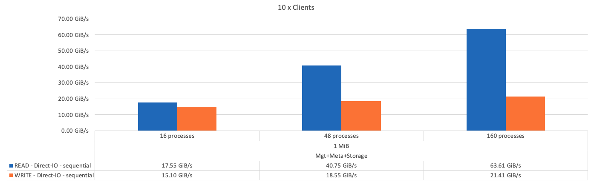
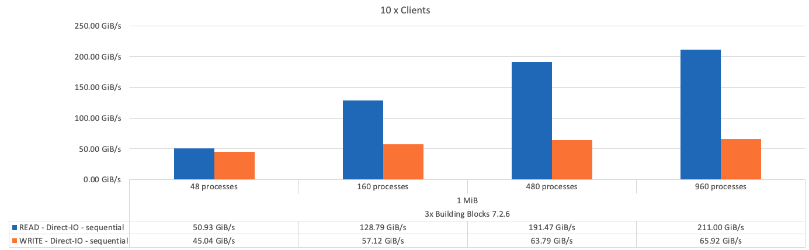
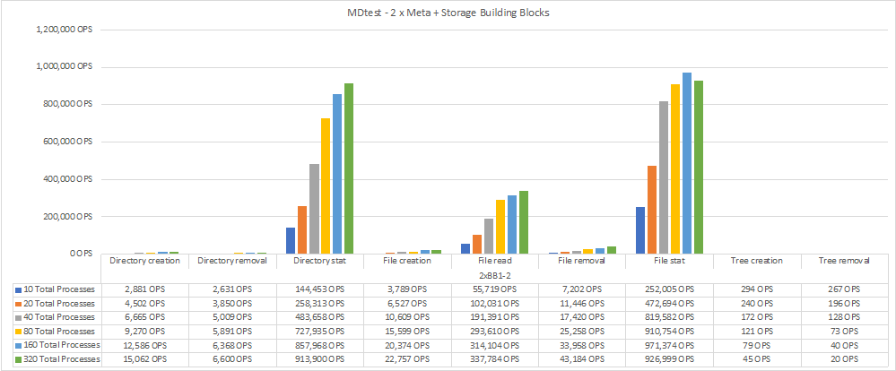

문서 변경 요청
문서 변경 요청 이 페이지 편집
이 페이지 편집 기여하는 방법 자세히 알아보기
기여하는 방법 자세히 알아보기설계 검증
BeeGFS on NetApp 솔루션의 2세대 설계는 3가지 구성 요소 구성 프로필을 사용하여 검증되었습니다.
구성 프로파일에는 다음이 포함됩니다.
-
BeeGFS 관리, 메타데이터 및 스토리지 서비스를 포함한 단일 기본 구성 요소입니다.
-
BeeGFS 메타데이터와 스토리지 구성 요소
-
BeeGFS 스토리지 전용 구성 요소입니다.
빌딩 블록은 2개의 Mellanox Quantum InfiniBand(MQM8700) 스위치에 연결되었습니다. 10개의 BeeGFS 클라이언트도 InfiniBand 스위치에 연결되었으며 통합 벤치마크 유틸리티를 실행하는 데 사용되었습니다.
다음 그림에서는 NetApp 솔루션의 BeeGFS 검증을 위해 사용되는 BeeGFS 구성을 보여 줍니다.

BeeGFS 파일 스트라이핑
병렬 파일 시스템의 이점은 여러 스토리지 대상 간에 개별 파일을 스트라이핑하는 기능입니다. 이 기능은 동일하거나 다른 기본 스토리지 시스템의 볼륨을 나타낼 수 있습니다.
BeeGFS에서는 디렉토리 및 파일별로 스트라이핑을 구성하여 각 파일에 사용되는 타겟 수를 제어하고 각 파일 스트라이프에 사용되는 청크 크기(또는 블록 크기)를 제어할 수 있습니다. 따라서 서비스를 재구성하거나 다시 시작할 필요 없이 파일 시스템에서 다양한 유형의 워크로드와 I/O 프로필을 지원할 수 있습니다. "begfs -ctl" 명령줄 도구 또는 스트라이핑 API를 사용하는 응용 프로그램을 사용하여 스트라이프 설정을 적용할 수 있습니다. 자세한 내용은 의 BeeGFS 설명서를 참조하십시오 "스트라이핑" 및 "스트라이핑 API".
최상의 성능을 얻기 위해 테스트 중에 스트라이프 패턴을 조정하고 각 테스트에 사용된 매개 변수를 기록하였습니다.
IOR 대역폭 테스트: 여러 클라이언트
IOR 대역폭 테스트는 OpenMPI를 사용하여 합성 I/O 생성기 툴 IOR(에서 제공)의 병렬 작업을 실행했습니다 "HPC GitHub를 참조하십시오") 10개 클라이언트 노드 전체에서 하나 이상의 BeeGFS 구성 요소로 이동합니다. 달리 명시되지 않은 한:
-
모든 테스트는 1MiB 전송 크기의 직접 I/O를 사용했습니다.
-
BeeGFS 파일 스트라이핑은 1MB 청크 크기 및 파일당 하나의 타겟으로 설정되었습니다.
다음 매개 변수는 IOR에 사용되었습니다. 세그먼트 수는 구성 요소 1개의 경우 애그리게이트 파일 크기를 5TiB로, 3개의 구성 요소는 40TiB로 유지하도록 조정되었습니다.
mpirun --allow-run-as-root --mca btl tcp -np 48 -map-by node -hostfile 10xnodes ior -b 1024k --posix.odirect -e -t 1024k -s 54613 -z -C -F -E -k
다음 그림에서는 단일 BeeGFS 기반(관리, 메타데이터 및 스토리지) 구성 요소를 사용한 IOR 테스트 결과를 보여 줍니다.

다음 그림에서는 단일 BeeGFS 메타데이터 + 스토리지 구성 요소를 사용한 IOR 테스트 결과를 보여 줍니다.

다음 그림에서는 단일 BeeGFS 스토리지 전용 구성 요소를 사용한 IOR 테스트 결과를 보여 줍니다.

다음 그림에서는 세 개의 BeeGFS 구성 요소가 포함된 IOR 테스트 결과를 보여 줍니다.

예상한 대로 기본 구성 요소과 후속 메타데이터 + 스토리지 구성 요소 간의 성능 차이는 무시할 수 있습니다. 메타데이터 + 스토리지 구성 요소 및 스토리지 전용 구성 요소를 비교하면 스토리지 대상으로 사용되는 추가 드라이브로 인해 읽기 성능이 약간 향상됩니다. 그러나 쓰기 성능에는 큰 차이가 없습니다. 더 높은 성능을 얻기 위해 여러 구성 요소를 함께 추가하여 성능을 선형 방식으로 확장할 수 있습니다.
IOR 대역폭 테스트: 단일 클라이언트
IOR 대역폭 테스트는 OpenMPI를 사용하여 단일 고성능 GPU 서버를 사용하여 여러 IOR 프로세스를 실행하여 단일 클라이언트에서 얻을 수 있는 성능을 탐색했습니다.
이 테스트는 클라이언트가 Linux 커널 페이지 캐시('tuneFileCacheType=NATIVE')를 사용하도록 구성된 경우 BeeGFS의 다시 읽기 동작 및 성능을 기본 '버퍼링' 설정과 비교합니다.
네이티브 캐싱 모드는 클라이언트의 Linux 커널 페이지 캐시를 사용하므로 네트워크를 통해 다시 전송되는 것이 아니라 로컬 메모리에서 다시 읽기 작업을 수행할 수 있습니다.
다음 다이어그램은 BeeGFS 빌딩 블록 3개와 단일 클라이언트를 사용한 IOR 테스트 결과를 보여 줍니다.


|
이러한 테스트를 위한 BeeGFS 스트라이핑은 파일당 타겟 8개가 포함된 1MB 청크 크기로 설정되었습니다. |
기본 버퍼링 모드에서 쓰기 및 초기 읽기 성능이 향상되지만, 동일한 데이터를 여러 번 다시 읽는 워크로드의 경우 네이티브 캐싱 모드에서 성능이 크게 향상됩니다. 이렇게 향상된 다시 읽기 성능은 여러 번의 Epoch에서 동일한 데이터 세트를 여러 번 다시 읽는 딥 러닝과 같은 워크로드에 중요합니다.
메타데이터 성능 테스트
Metadata 성능 테스트는 IOR의 일부로 포함된 MDTest 도구를 사용하여 BeeGFS의 메타데이터 성능을 측정했습니다. 이 테스트에서는 OpenMPI를 사용하여 10개의 클라이언트 노드 모두에서 병렬 작업을 실행했습니다.
다음 매개 변수는 총 프로세스 수가 2배속 단계에서 10개에서 320으로 조정되고 파일 크기가 4K인 벤치마크 테스트를 실행하는 데 사용되었습니다.
mpirun -h 10xnodes –map-by node np $processes mdtest -e 4k -w 4k -i 3 -I 16 -z 3 -b 8 -u
메타데이터 성능은 먼저 메타데이터 + 스토리지 구성 요소 하나를 측정한 후 추가 구성 요소를 추가하여 성능이 얼마나 향상되는지를 보여 줍니다.
다음 다이어그램은 하나의 BeeGFS 메타데이터 + 스토리지 구성 요소가 포함된 MDTest 결과를 보여 줍니다.

다음 다이어그램은 BeeGFS 메타데이터 + 스토리지 구성 요소 두 개가 포함된 MDTest 결과를 보여 줍니다.

기능 검증
이 아키텍처의 검증 과정에서 NetApp은 다음을 비롯한 여러 기능 테스트를 수행했습니다.
-
스위치 포트를 비활성화하여 단일 클라이언트 InfiniBand 포트에 장애 발생
-
스위치 포트를 비활성화하여 단일 서버 InfiniBand 포트에 장애 발생
-
BMC를 사용하여 즉시 서버 전원을 끕니다.
-
노드를 대기 노드에 배치하고 다른 노드에 대한 서비스 장애 조치를 원활히 합니다.
-
노드를 다시 온라인 상태로 전환하고 원래 노드에 서비스를 페일백합니다.
-
PDU를 사용하여 InfiniBand 스위치 중 하나의 전원을 끕니다. BeeGFS 클라이언트에 설정된 'sysSessionChecksEnabled:false' 매개 변수를 사용하여 스트레스 테스트가 진행되는 동안 모든 테스트가 수행되었습니다. I/O에 대한 오류나 운영 중단이 관찰되지 않았습니다.
|
|
알려진 문제가 있습니다( 참조) "변경 로그") 기본 인터페이스('connInterfacesFile’에 정의된 대로) 손실 또는 BeeGFS 서버 장애로 인해 BeeGFS 클라이언트/서버 RDMA 연결이 예기치 않게 중단되거나 활성 클라이언트 I/O가 최대 10분 동안 중단되어 다시 시작할 수 있습니다. 이 문제는 계획된 유지 관리를 위해 BeeGFS 노드가 정상적으로 대기 상태가 되거나 TCP가 사용 중인 경우 발생하지 않습니다. |
NVIDIA DGX A100 SuperPOD 검증
NetApp은 메타데이터와 스토리지 구성 프로필이 적용된 3개의 구성 블록으로 구성된 유사한 BeeGFS 파일 시스템을 사용하여 NVIDIAs DGX A100 SuperPOD에 대한 스토리지 솔루션을 검증했습니다. 검증 노력에는 다양한 스토리지, 머신 러닝 및 딥 러닝 벤치마크를 실행하는 20개의 DGX A100 GPU 서버를 통해 이 NVA에 의해 설명된 솔루션을 테스트하는 작업이 포함되었습니다.
자세한 내용은 을 참조하십시오 "NetApp을 포함한 NVIDIA DGX SuperPOD".